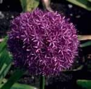

Partnerships
Urban Bees works with partners to provide food and shelter for honeybees and wild bees across London and to educate employees, local residents and young people and children about the value of bees and other pollinators.
Here are some examples:
Here are some examples:
Weil law firm helps solitary bees
The Honey Club’s King’s Cross Bee Trail
There are many ways that Urban Bees can work with corporate and community partners:
- creating bee-friendly planters on rooftops, balconies and courtyards
- maintaining bee hives and bee hotels on site
- maintaining sponsored hives at our apiary
- educating and training
- team building through beekeeping or creating habit for pollinators
- developing a CSR project
For more details contact
Alison on
0788 405 4150.